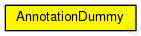

This documentation is released under the Creative Commons license
This documentation is released under the Creative Commons licenseworkaround to visualize annotations
The following diagram shows usage relationships between types. Unresolved types are missing from the diagram. Click here to see the full picture.
The following diagram shows inheritance relationships for this type. Unresolved types are missing from the diagram. Click here to see the full picture.
| Name | Value | Description |
|---|---|---|
| display | b=70,30,oval,red,black,4 | |
| class | Veins::AnnotationDummy |
// // workaround to visualize annotations // simple AnnotationDummy { parameters: @display("b=70,30,oval,red,black,4"); @class(Veins::AnnotationDummy); }
This documentation is released under the Creative Commons license